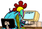

The Rec.humor.funny Ban
 It all started in late 1988. rec.humor.funny had been running for around 17 months, and was doing very well. I had set up a system so that I could deposit accepted jokes into a queue directory, and once or twice a day, the computer would automatically select a random joke from the directory and post it to the net.
On November 9, 1988, the computer picked the following joke to post
The joke that made RHF infamous
Radio Astronomy, University of Toronto
( rec.humor, rec_humor_cull, racist (mildly), chuckle)
(Relayed From prabhu@mitisft)
A Scotsman and a Jew went to a restaurant. After a hearty meal, the waitress came by with the inevitable check. To the amazement of all, the Scotsman was heard to say, "I'll pay it!" and he actually did.
The next morning's newspaper carried the news item:
"JEWISH VENTRILOQUIST FOUND MURDERED IN BLIND ALLEY."
Now this joke has some mildly racist overtones, and so I made a minor mistake in forgetting to follow my usual policy on such jokes, namely to encode the joke in what is known as rot13 encoding.
Our policy here has always been to not judge jokes based on their politics, only on their comedy. This means that jokes like the above can make the cut.
The bad news was that November 9, 1988 was the 50th anniversary of Krystallnacht, the horrible night when the Nazis burned and smashed the property and temples of German Jews, considered by some to be the start of the worst of the holocaust.
This coincidence of dates proved to be too much for Jonathan E. D. Richmond, a graduate student at M.I.T. at the time. Richmond took serious offence and started a campaign against me on the net. That sort of thing (an offended person starting a posting campaign against something that offended them) happens all the time on the net, and by and large most people weren't offended at all. He called for me to be "replaced" as moderator, or barred from the net. He didn't realize that those things don't happen on the net, that it's an anarchy, and each person who builds something gets to run it and has no boss who can replace him or her.
Richmond was disturbed to find that just 4 other posters agreed with him. Just about everybody else laughed at his efforts -- or generally disagreed with the idea of anybody being censored for a politically incorrect joke or other posting. During the debate, in fact, a far nastier joke indirectly critical of Richmond appeared that ended up getting me in a bunch of trouble.
Usually, when would-be banners get derided, they go away, but Richmond was not to falter. First he called my company, hoping to get me fired. I do wish I had had the quickness to realize this and pretended to be my boss, so that I could assure Richmond that I would be fired, but alas I just told him that I owned the company.
He hunted around for a while and eventually called the Kitchener-Waterloo Record, the 85,000 circulation daily newspaper in the town in which I was living. At the Record, he found Louisa D'Amato, an Italian-Jewish reporter who was quite sympathetic to his complaint. I gave D'Amato a nice interview on the matter, since she pretended to be sympathetic to my view when she called me. (I've learned since then...)
Back in 1988, "Internet" was a new word and much of USENET flowed over plain old modem links via a protocol called UUCP. Usually one big site in a town would make the long distance call to bring in the news, and send out the few local articles that were generated, and other sites would talk to that site with local calls. So it was with my site and the University of Waterloo (my alma mater), which acted as hub for the area.
Richmond convinced D'Amato to write a very negative story on the idea of a joke forum where politically incorrect jokes could and did appear, and in particular on the idea that the University, acting as an ordinary USENET hub (like thousands of other universities around the world at the time) was facilitating all this.
The story she wrote appeared on the front page of the paper on December 1, 1988. I got permission from the Record to post it to the net.
Reaction
This story surprised me, and upped the stakes. Over the next week, stories appeared almost every day, either on the front page or on the front page of the local section. The citizens of the town actually took no notice of it, and in spite of D'Amato's thought that they would, but the University did. It had to be seen to act, or felt it did. It shut off my link, and said I could have it back if I agreed not to send jokes that were offensive or "in bad taste."I said I would, and asked for the University's official guide to taste, but they never provided it.
The moment the word got out I had been banned from the University's computers, at least a dozen sites offered to call me directly to allow the feed of rec.humor.funny to go out to the world. So it was never off the air.
In the meantime, I decided to have fun with the University. I still did a feed to them, as well as the uncensored feed to the real world. But for the U's feed, any joke that was even mildly offensive was replaced with a message that had the same headers and title, but the body was replaced by a notice stating that the University had asked that jokes in bad taste not be sent to it. Sort of like the South African newspapers with the blank spots where censored stories used to be.
The rest of the world also covered the event, and Richmond also talked to reporters at his local Boston Herald. Whoops. They did a page 2 story on it which wasn't all that kind to Richmond. I can only assume that he realized the press was a dangerous tool. Getting me banned had not made him a popular figure at MIT or on the net, and he got hassled apparently as he walked around the campus, though nothing physical was done. At any rate, he never talked to the press again after that.
While stories were also done in the Toronto papers, it was odd that nobody noted the original joke was submitted by somebody at the University of Toronto.
I got pretty scared by the press over-attention, and did the smart thing and declined to talk to reporters. Since then I have never had anything but sympathy for those people whom Mike Wallace says, in a dour and critical voice, "refused to talk to 60 minutes."
The ban was in place, and hundreds of letters were written to the K-W Record (more than they got on any other issue that year -- that's the power of the net, even then) and to the University, but it seemed it was all settling down.
I only got one letter from the general public in this case. A big packet of apparently hand-typed-for-me notes from a Nazi living in Sarnia, Ontario. Not a neo-Nazi, but an "I fought for the Fuhrer in the war" Nazi, saying how great it was that people were telling Jewish jokes on the computer. One of the scariest things I ever got.
Good thing, I guess, that D'Amato failed to mention one minor detail in her story about me as leader of the network of anti-semitic computer nazis. I'm Jewish enough myself that had I lived there, Hitler might have put me and my family in the camps.
Of course, other than providing a harrowing week, being banned was great for business. I had just released the first jokebook based on rec.humor.funny, and had put "Banned at the University of Waterloo" stickers on them. I'm sure I sold a lot more books due to the ban. And rec.humor.funny quickly surged to become the most widely read thing on the net. That fame helped me start ClariNet, the largest circulation electronic newspaper on the Internet. Today our number of paying subscribers is more than 14 times that of the Kitchener-Waterloo Record. This is a lesson for those who want to ban things -- in the end you only help the people you want to ban.
Is it over yet?
Early in 1989, when we thought the story was long gone, June Genis, a programmer at Stanford University, noted to her boss in passing that there had been this silly flap over politically incorrect jokes in rec.humor.funny. June's a libertarian, about as much against censorship as you can get, so she was shocked when her boss, hearing that another University had banned the group, decided that Stanford should ban it as well.So they did, shutting off the group entirely. They argued that since rec.humor.funny was moderated, there was no place to complain. The kept the unmoderated rec.humor because people could counter the jokes there.
To this day nobody understood that logic or knows the real reason for the ban, but Stanford students and faculty got up in arms over the idea of the computer center deciding what was fit to read and what wasn't.
This time the press coverage was all anti-ban. Stanford's a bit more famous than the U. of Waterloo, so we saw stories and editorials in not just the major dailies of the S.F. Bay Area, but also in magazines like Fortune (see the Keeping Up column in the 1989 Fortune 500 issue), the New Scientist, Communications of the A.C.M. and others.
Stanford's administration found themselves looking like fools. John McCarthy, better known to many as the originator of the LISP computer language, called me up to say he would be leading the fight at Stanford to reverse the ban. Pressure by him and others caused the faculty senate to have the matter referred to the library committee. Anybody knows what a library committee is going to say about administrative bans of unpopular material. They reversed the ban, though it took a few months.
Stanford also at the time was having some controversy over other censorious policies, such as a "fighting words" doctrine and several others. These were also later overturned in a victory for academic freedom. I'm proud to have played a small part in helping this victory.
Waterloo, years later.
During the later years, UW played with banning other groups as well. So did other schools. A popular target are the alt.sex groups, and when they banned those it finally got the swell of popular opinion against group banning. John McCarthy also came up to give a talk in support of the anti-ban efforts. In late 1991, UW finally reversed the ban, much to my personal satisfaction, even though I left the city of Waterloo that year.Lessons and Conclusions
It should be noted that I never challenged the right of UW or Stanford to ban my publication. As private institutions, they have the legal right to decide what is done with their computers. I, and many others, however, argued that it was a violation of the strong principles of academic freedom. A University, we feel, should not attempt to protect its students, and certainly not its faculty, from the offensive forms of expression in the real world. In fact, even if you wanted to argue that some things should be banned out in the world at large, Universities have a special history of being the exception.It's sad that this has changed at some schools these days, and many people have vowed to continue to fight it.
Other notes
- Racism is a nasty accusation. If you're accused of it, don't even bother answering, you can't give the right answer. Avoid talking to the press, even if you are innocent, unless you really know what you are doing.
- On the other hand, being banned can do wonders for your visibility if the people who really count know you and know the truth. It can make you a lot of money.
- Censors will never win. As my friend John Gilmore has often been quoted as saying, "the net interprets censorship as damage and routes around it." That's an apt description of what happened both places it was banned, with tons of new paths being used to get the same data.
- Censors will do a lot of damage trying to win. The week of front-page coverage was very nerve-wracking. I'm thicker skinned now but for a while I thought the story was going to go seriously national, and people would say, "so this is what those computer nets are for." The story did go national years later, as the porn-on-the-net recurring story. I'm glad it wasn't me as the computer nazi showing up on a Time magazine cover.